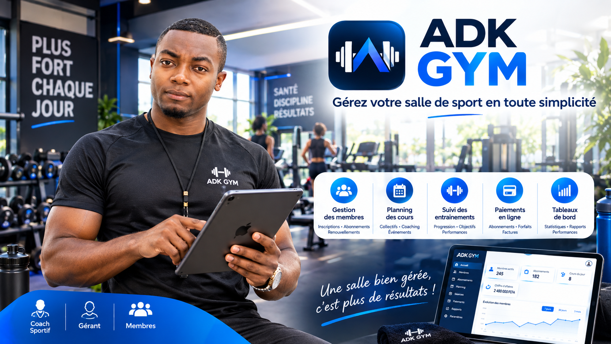
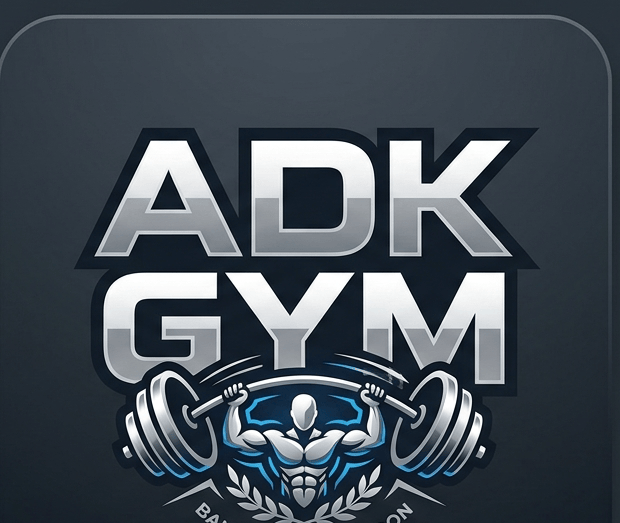
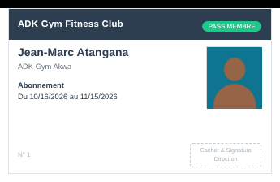
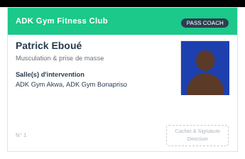

ADK Gym Management
La solution tout-en-un pour gérer votre salle de sport dans Odoo 18 : membres, abonnements, facturation, coachs, programmes, salles, inventaire multi-salles et boutique, avec un tableau de bord en temps réel et des documents PDF prêts à imprimer.
Odoo 18 · Community & Enterprise · Membres · Abonnements & factures · Coachs · Multi-salles · Inventaire · 7 documents PDF
Pourquoi ADK Gym Management ?
Un gérant de salle de sport jongle avec des cahiers d'inscription, des tableurs d'abonnements, des relances de paiement et un stock de matériel qu'on ne retrouve jamais. ADK Gym Management remplace tout cela par une seule application, intégrée à la comptabilité d'Odoo, avec une interface soignée que votre équipe prend en main en quelques minutes.
- Inscrire en 2 minutes : fiche complète avec photo, morphologie, IMC calculé automatiquement, objectifs, niveau et contre-indications médicales
- Ne plus rien oublier : l'état de chaque abonnement est mis à jour automatiquement chaque nuit, les expirations à venir sont signalées
- Facturer sans ressaisie : une facture client Odoo est créée depuis l'abonnement, avec les produits de la boutique, et son statut de paiement remonte sur la fiche
- Encadrer vraiment : coachs, portefeuille de membres et programmes d'entraînement détaillés, exercice par exercice
- Piloter plusieurs salles : un article de matériel partagé entre salles, avec sa propre quantité et son propre état dans chacune
- Imprimer des documents professionnels : fiche d'inscription, pass membre, contrat, fiche coach, pass coach, fiche salle, rapport périodique
Pour qui ?
Salles de sport et de musculation, clubs de fitness, studios de yoga, de boxe ou de crossfit, centres de remise en forme, réseaux de plusieurs salles : du gérant indépendant à la chaîne de clubs.
Tableau de bord en temps réel
Dès l'ouverture, le tableau de bord affiche l'état de votre activité, sans aucune action à faire : il se rafraîchit seul toutes les 30 secondes.
- Membres : membres actifs, membres expirés, nouveaux inscrits du mois, abonnements qui expirent sous 7 jours
- Structure & inventaire : nombre de coachs, de salles, d'équipements en panne ou en maintenance, produits vendus
- Finance : revenu des abonnements actifs et revenu généré ce mois
- Accès direct, en un clic, à la liste des membres actifs et des abonnements qui expirent
Gestion des membres
Chaque membre dispose d'une fiche complète et d'un historique. La vue Kanban donne, d'un coup d'œil, le visage, la salle, l'âge, le numéro d'abonnement et le statut (Actif, Expiré, Aucun abonnement).
- Identité et contact : photo, date de naissance (âge calculé), téléphone, e-mail, quartier, contact client lié pour la facturation
- Morphologie : taille, poids, IMC et catégorie calculés automatiquement (insuffisance pondérale, normal, surpoids, obésité)
- Objectifs sportifs multiples et niveau de pratique
- Santé : contre-indication médicale et détails, pour que les coachs adaptent l'entraînement
- Salle et coach personnel rattachés au membre
- Contrôles de cohérence : date de naissance dans le futur ou âge minimum de 5 ans refusés
- Historique complet des changements dans le chatter Odoo, archivage possible
Abonnements et facturation
Le coeur du module. On choisit le type d'abonnement : journalier, mensuel, trimestriel, annuel ou spécial. La date de fin et le prix sont calculés automatiquement.
- Calcul automatique des dates et du prix selon le type ; remise en pourcentage ; prix après remise et total à payer
- Disciplines multiples par abonnement (musculation, cardio, yoga, boxe, crossfit, zumba…), coach responsable et salle
- Produits additionnels de la boutique (frais d'inscription, eau, protéines…) ajoutés au même total
- Couleurs d'alerte en Kanban : vert, jaune à moins de 7 jours, rouge si expiré
- Expiration automatique par une tâche planifiée quotidienne, avec trace dans l'historique
- Renouvellement en un clic : une fenêtre reprend le membre, le forfait, le coach et les disciplines
- Workflow sécurisé : un abonnement actif doit être expiré avant d'être annulé
- Remise et modification du prix réservées au Responsable ou à l'Administrateur : l'accueil voit le tarif standard sans pouvoir le surcharger
Facture Odoo native
Depuis l'abonnement, le bouton de facturation crée une facture client Odoo (account.move) au nom du contact du membre : une ligne pour l'abonnement et une ligne par produit additionnel. Le statut de paiement de la facture remonte sur l'abonnement. La facture suit ensuite le circuit habituel de la comptabilité Odoo : validation, paiement, avoir.
Coachs et programmes d'entraînement
Fiche coach avec photo, spécialité, diplôme, années d'expérience, biographie, disponibilité (Disponible, Occupé, En congé) et salles d'intervention. Chaque coach voit son portefeuille de membres et ses programmes.
Un programme d'entraînement peut regrouper plusieurs membres, plusieurs coachs et plusieurs objectifs. Il contient la liste des exercices avec séries, répétitions, charge et temps de repos, ainsi que les observations du coach. Il passe de Brouillon à En cours puis Terminé.
Salles et clubs
Gérez une ou plusieurs salles : coordonnées (pays, ville, quartier, téléphone, e-mail), capacité maximale, horaires d'ouverture jour par jour (avec génération automatique de la semaine type), membres rattachés, coachs et inventaire d'équipements.
Inventaire multi-salles
Un même article de matériel peut être présent dans plusieurs salles sans jamais être dupliqué dans le catalogue. Depuis la fiche de l'article, on renseigne une ligne par salle avec sa quantité, son état, sa référence d'inventaire, sa date et son prix d'achat.
- États du matériel : bon état, en maintenance, endommagé, retiré
- Mouvements d'entrée et de sortie par salle (achat, retour, mise hors service, perte, retrait) qui mettent à jour la quantité automatiquement
- Références d'inventaire uniques et une seule ligne par couple article / salle : pas de doublon possible
- Rapport d'état du stock des outils, regroupé par article ou par salle
Boutique et configuration
Vendez eau, protéines, gants, serviettes… La boutique utilise les produits natifs d'Odoo ; ils s'ajoutent aux abonnements et se facturent ensemble. Deux produits sont fournis à l'installation : les frais d'inscription et la bouteille d'eau.
Les listes de référence se paramètrent dans Configuration : disciplines (durée par séance, participants max, prix par défaut, équipements requis), objectifs sportifs et niveaux de pratique. Des valeurs par défaut sont fournies.
Analyses et rapports
L'analyse des abonnements, en graphique ou en tableau croisé, montre les revenus par discipline, par coach, par salle ou par type, filtrables par statut.
Documents PDF prêts à imprimer
Sept documents, aux couleurs de votre club (nom, logo et adresse de votre société), générés avec les données à jour de la fiche, sans aucune ressaisie.
Fiche d'inscription du membre
Récapitulatif complet à l'accueil, avec photo, informations personnelles, données physiques, objectif et abonnement, et zones de signature. Bouton Imprimer Fiche sur la fiche du membre.
Pass / badge du membre et du coach
Carte d'accès à présenter en salle, avec photo, salle et période d'abonnement. Disponible aussi pour les coachs.


Contrat d'abonnement
Document contractuel avec les conditions et la période, imprimable depuis le bouton Imprimer Contrat sur l'abonnement.
Fiche coach
Profil, qualification, salles d'intervention, membres suivis et programmes encadrés.
Fiche salle
État des lieux d'une salle : localisation, horaires, abonnements des clients, coachs et inventaire des équipements.
Rapport périodique des abonnements
Généré à la demande sur la période, le statut et la salle de votre choix depuis l'assistant du menu Rapports. Idéal pour un bilan mensuel ou un compte rendu à la direction.
Rôles et droits d'accès
Trois niveaux d'accès adaptent les droits de chaque utilisateur à ses responsabilités. Vérifiez qu'ils correspondent à l'organisation de votre équipe avant la mise en production.
Utilisateur Gym
- Consulte et crée des membres et des abonnements
- Enregistre les mouvements de stock (entrées / sorties)
- Consulte les programmes, coachs, disciplines et salles
- Ne peut pas créer ni modifier une salle, ne peut rien supprimer
Responsable Gym
- Hérite des droits de l'Utilisateur Gym
- Gère les coachs, les salles et la configuration du module
- Accorde des remises, modifie le prix et crée les factures depuis les abonnements
- Ne peut pas modifier le pays, la ville ou le quartier d'une salle existante, ni supprimer membres et abonnements
Administrateur Gym
- Hérite des droits du Responsable Gym
- Peut modifier la localisation des salles
- Droits complets de création, modification et suppression, paramétrage complet du module
Le processus, étape par étape
- Paramétrage — salles et horaires, coachs, disciplines, objectifs, niveaux, produits de la boutique.
- Inscription — fiche du membre avec photo, morphologie, objectifs et contact client ; impression de la fiche d'inscription.
- Abonnement — choix du type, des disciplines et du coach ; prix et dates calculés ; ajout des produits ; confirmation.
- Facturation — création de la facture Odoo, encaissement dans la comptabilité, statut de paiement visible sur l'abonnement ; impression du contrat et du pass.
- Coaching — programme d'entraînement avec exercices, séries, répétitions, charges et repos.
- Suivi quotidien — tableau de bord, abonnements qui expirent, expiration automatique.
- Renouvellement — un clic sur l'abonnement expiré.
- Matériel — mouvements de stock par salle, alertes maintenance, rapport d'état du stock.
- Bilan — analyses des abonnements et rapport périodique PDF.
Fonctionnalités principales
- Gestion des membres — fiches complètes, photo, morphologie, IMC automatique, objectifs, santé, historique.
- Gestion des abonnements — 5 types, calcul automatique des dates et du prix, remises, produits additionnels.
- Facturation intégrée — factures clients natives Odoo et statut de paiement synchronisé.
- Expiration et renouvellement — tâche planifiée quotidienne, renouvellement en un clic.
- Gestion des coachs — spécialité, disponibilité, salles, portefeuille de membres.
- Programmes d'entraînement — multi-membres, multi-coachs, multi-objectifs, exercices détaillés.
- Multi-salles — coordonnées, capacité, horaires jour par jour.
- Inventaire partagé — un article, plusieurs salles, quantité et état par salle, mouvements tracés.
- Boutique — produits natifs vendus avec l'abonnement.
- Tableau de bord — KPI membres, abonnements, matériel et revenus, actualisation automatique.
- Analyses — graphiques et tableau croisé des abonnements.
- 7 documents PDF — fiche d'inscription, pass membre et coach, contrat, fiche coach, fiche salle, rapport périodique.
- 3 niveaux d'accès — Utilisateur, Responsable, Administrateur.
- Historique complet — suivi des modifications et activités dans le chatter Odoo.
Fiche technique
- Version Odoo : 18.0 (natif)
- Éditions compatibles : Community & Enterprise
- Licence logicielle : OPL-1
- Catégorie Odoo Apps : Services / Fitness
- Dépendances : base, mail, account, product, hr
- Monnaie : celle de votre société (les tarifs par défaut sont modifiables par abonnement)
Support et auteur
Auteur : Kambeu Henang Ange Duval
Support :
duvalkambeu61@gmail.com
Une question, un bug, une demande d'évolution ?
Contactez-nous, nous répondons rapidement.